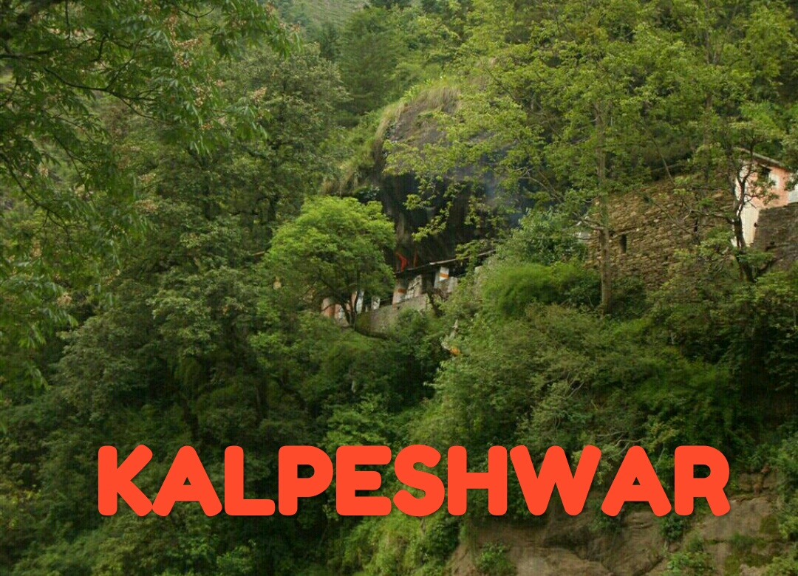

|
|
|
|
|
 |
Tungnath is the highest Shiva temple in the world and is the highest of the five Panch Kedar temples located in the mountain range of Tunganath in Rudraprayag
district, in the Indian state of Uttarakhand. The Tunganath (literal meaning: Lord of the peaks) mountains form the Mandakini and Alaknanda river valleys. It is located at an altitude of 3,460 m (11,352 ft), and just below the peak of Chandrashila.
The temple is believed to be 5000 years old and is the third (Tritiya Kedar) in the pecking order of the Panch Kedars. It has a rich legend linked to the Pandavas, heroes of the Mahabharata epic
Legend
According to Hindu mythology Lord Shiva and his consort Parvati both reside in the Himalayas: Lord Shiva resides at Mount Kailash. Parvati is also called Shail Putri which means 'daughter of hills'.
Worship
The priest at this temple is a local Brahmin from ukhimath village, unlike the other Kedar temples where the priests are from South India, a tradition set by the eighth century Hindu seer Sankaracharya. It is also said that the Maithani Brahmins officiate as priests at this temple. During the winter season, the temple is closed and the symbolic image of the deity and the temple priests are moved to Mukkumath, which is 19 km (12 mi) from here. It is near Duggalbitha 10 km (6 mi) before Chopta towards Ukhimath.
Geography
Tungnath is at the top of the ridge dividing the waters of the Mandakini River (raising from Kedarnath) from those of the Alaknanda River (raising above Badrinath). The Tungnath peak on this ridge is the source of three springs, which form the Akashkamini River. The temple lies about 2 km (1.2 mi) below the Chandrashila Peak (4,000 m (13,123 ft)). The road to Chopta is just below this ridge and hence provides the shortest bridle approach path for trekking to the temple from Chopta, over a short distance of about 4 km (2.5 mi). From the top of the Chandrashila peak, picturseque views of the Himalayan range comprising snow peaks of Nanda Devi, Panch Chuli, Banderpoonch, Kedarnath, Chaukhamba and Neelkanth on one side, and the Garhwal valley on the opposite side could be witnessed. The valley between Chopta and Tunganath temple has wooded hills with rich alpine meadows with rhododendron coppices and also agricultural fields. The rhododendrons, when they are in full bloom during March, display dazzling colours ranging from crimson to pink. A high-altitude botanical station of the Garhwal University is located here. Nearing the top of the temple, there is a forest resthouse at Dugalibitta, just opposite to the Kedarnath range of hills. The Kedaranth Wild Life Sanctuary, also called the Kedarnath Musk Deer Sanctuary, set up in 1972 to preserve the endangered musk deer, which lies in the region, also has a musk deer breeding centre at Kharchula Kharak near Chopta.
Climate
Climate of Tungnath is generally cool throughout the year. Summers are very pleasant with average temperature hovering around 16 degrees Celsius during the day time. Winters are very chilly and temperature drops below the freezing point very frequently. Due to heavy snowfall, Tungnath temple remains closed for around 6 months during winter.
The nearest airport is Jolly Grant, Dehradun (258 km (160 mi)). The nearest railway station is at Rishikesh (241 km (150 mi)).